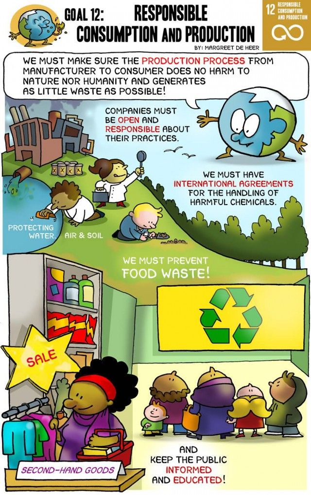
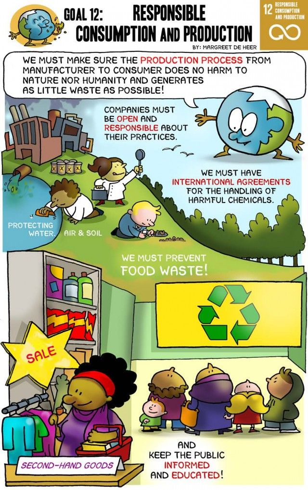
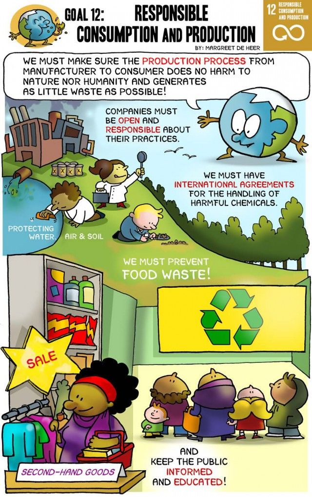

Thea Kathrine U. Galvez - 9 Sodium

This webpage is about the SDG 12. SDG 12 or Responsible Consumption and Production talks about the responsibility of us humans when consuming or producing products. It talks about our right on how to responsibly produce products that are safe and efficient for our environment and it also includes our behavior after consuming these products. The SDG is important in maintining good behavior of humans and cleaning up after their consumption and waste
The main objective of this webpage is to spread awareness about this Sustainable Development Goal. Other detailed objectives include promoting organizations that support this cause, promoting simple and small solutions that can be implemented from our households, and etc. The objective of this webpage is to also influence and encourage people to maintain responmsible consumption and production of products.
CS3 Project